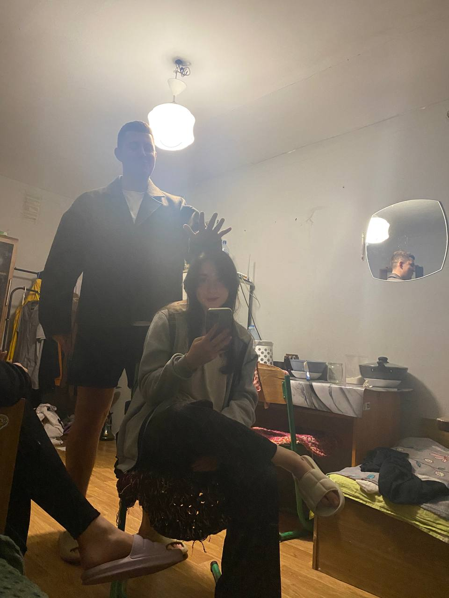

Правила для Ріти
Правильне розташування куль:
- Розклади всі кулі в трикутник на більярдному столі так, щоб біла куля була окремо – це твій стартовий удар.
Прицілься і бий:
-
Перший удар завжди робить той, хто виграв жеребкування або домовленість.
- Бери кий, прицілюйся, але пам'ятай – ключ до успіху не в силі удару, а в точності.
Завжди влучай по своїх кулях:
- Якщо граєш в "американку" або "вісімку", то після першого удару ти маєш або полосаті, або суцільні кулі.
- Твоя мета – забивати лише свої кулі в лузи, а біла повинна лишатися на столі.
Слідкуй за білою кулею:
- Якщо вона потрапить у лузу, твій хід завершено, і суперник отримає шанс розставити її на будь-якому місці столу.
Чесно визнавай фоли:
- Забив чужу кулю або білу – фол.
- Дай супернику можливість продовжити гру з кращої позиції.
Виграй "вісімку":
- Гра закінчується, коли одна зі сторін заб'є свої кулі і останньою – чорну восьму кулю.
- Але будь обережна, якщо заб'єш "вісімку" передчасно, гра програна.
*І найголовніше:
Не захоплюйся напоями – більярд вимагає тверезої голови та чіткої координації.
Пам'ятай: грати треба на перемогу, а не змагатися, хто більше "вип'є".
І Ріта, жодних думок про Богдана під час гри – все твоє зосередження має бути на більярдному столі!
